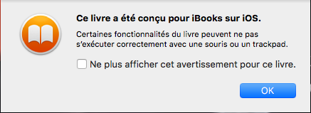
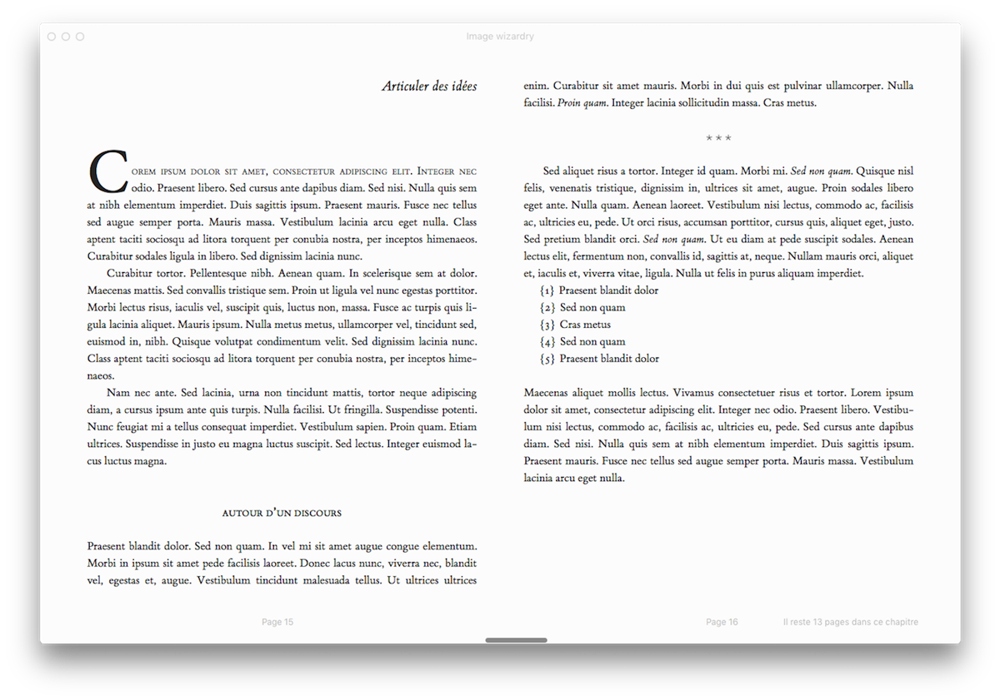
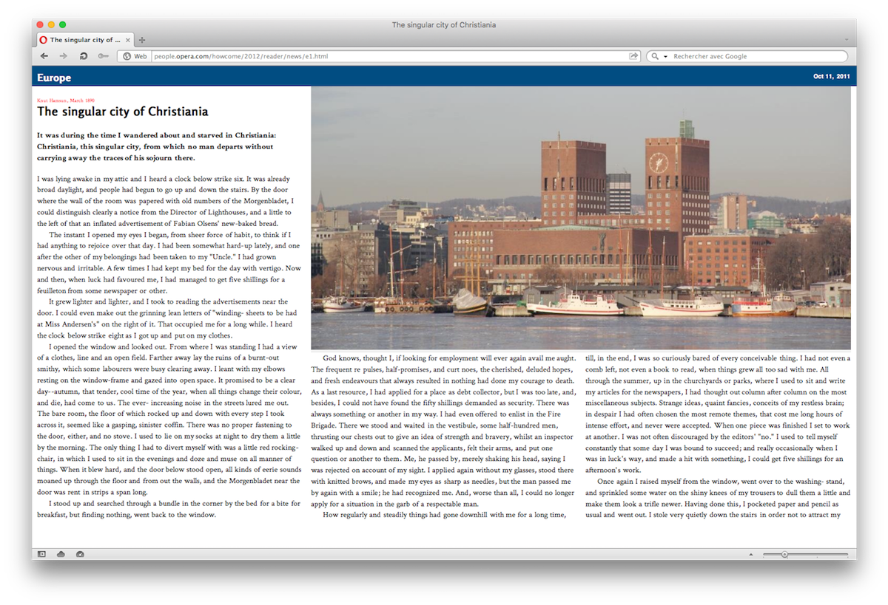
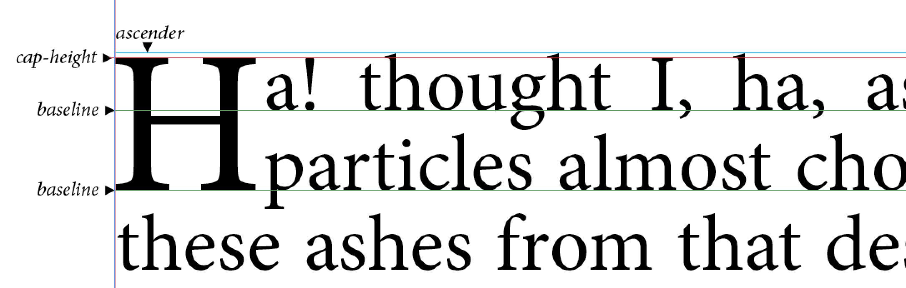
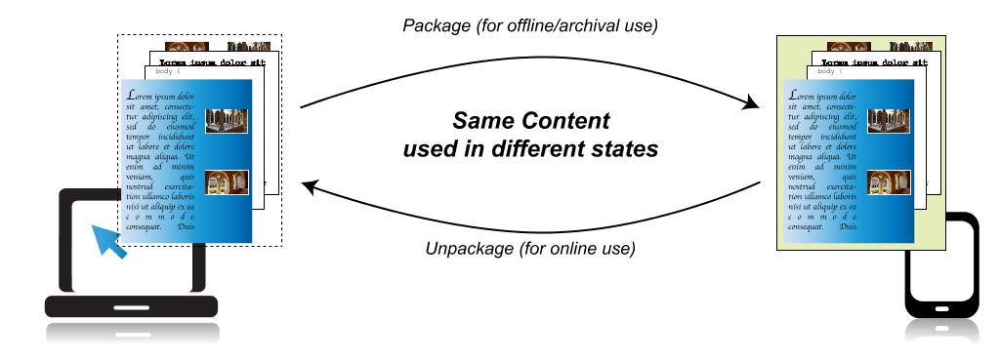
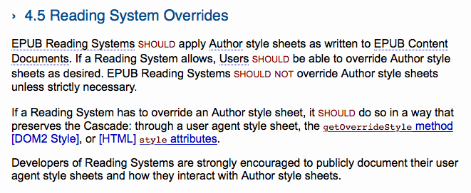

Pourquoi le web
devrait s’intéresser
au livre numérique
Note
Cette présentation a été étendue afin de devenir un kit de démarrage pour les interessés.
Des détails ont simplement été ajoutés et ne modifient pas les propos tenus lors de la présentation.

Documents ?
DPUB IG + IDPF = ?
Notre culture
Nous n’avons rien appris du web
✅ Bouillie non sémantique
LES NUITS MEXICAINES
I
LAS CUMBRES
Nulle contrée au monde n'offre, aux regards éblouis des voyageurs, de plus charmants paysages que le Mexique; entre tous, celui de las Cumbres ou des cimes est sans contredit un des plus saisissants et des plus gracieusement accidentés.
✅ Dimensions figées
L’export d’un logiciel très utilisé
Ce livre
Tout ça pour…
Ce livre✅ Fragmentation
✅ Technos propriétaires︎
✅ Livres conçus pour une seule plateforme
✅ Quelques specs un chouïa brutales
✅ IE 6
eBook Dev ?
- 2475 repos Github
- 2 frameworks actifs
- Contributions en mode « Où est Charlie ? »
- Dev Tools et doc en mode « Do It Yourself »
Les choses qui pourraient vous intéresser…
CSS Multi-column Layout Module
http://www.idpf.org/epub/31/spec/epub-contentdocs.html#sec-css-content-conf
Note
Keep in mind that some Reading Systems will not support all desired features of CSS. In particular, the following are known to be problematic:
- Reading System-induced pagination can interact poorly with style sheets. Pagination is sometimes done using columns, which can result in incorrect values for viewport sizes. Fixed and absolute positioning are particularly problematic.
- Some types of screens will not support animations and transitions.
Container Queries…
CSS Figures
Opera Reader, fin 2011
@media -o-paged {
html {
height: 100%;
overflow: -o-paged-x;
}
article {
overflow: -o-paged-x-controls;
columns: 25em;
}
figure {
column-span: -o-integer(2);
float: -o-top-corner;
}
}Liens utiles
Latin Text Layout and Pagination
- Grilles
- Regions 2.0
- Ligne de base
- OpenType features
- Font Metric API (Houdini)
Liens utiles
Portable Web Publications
- Archivage
- Inflexions sémantiques
- Relations entre les ressources
- Annotations
- Réglages utilisateur
En parlant des réglages utilisateurs…
http://www.idpf.org/epub/31/spec/epub-contentdocs.html#sec-css-rs-overrides
4.5 Reading System Overrides
EPUB Reading Systems should apply Author style sheets as written to EPUB Content Documents. If a Reading System allows, Users should be able to override Author style sheets as desired. EPUB Reading Systems should not override Author style sheets unless strictly necessary.
If a Reading System has to override an Author style sheet, it should do so in a way that preserves the Cascade: through a user agent style sheet, the getOverrideStyle method [DOM2 Style], or [HTML] style attributes.
Developers of Reading Systems are strongly encouraged to publicly document their user agent style sheets and how they interact with Author style sheets.
De manière à préserver la cascade…
*, * *, *[class], *[class] *[class] {
prop: value !important;
}Liens utiles
Des millions et des millions de PDF en ligne
(80 % des documents non HTML)
Pour les documents, nous sommes très loin d’avoir fini le boulot.
Who’s who
Les gens à suivre…
- Bill McCoy (@billmccoy)
- Ivan Herman (@ivan_herman)
- Dave Cramer (@dauwhe)
- Tzviya Siegman (@TzviyaSiegman)
- Hadrien Gardeur (@Hadrien)
- Laurent Le Meur (@lmrlaurent)
- Romain Deltour (@rdeltour)
- Daniel Weck (@DanielWeck)
- Matt Garrish (site web)